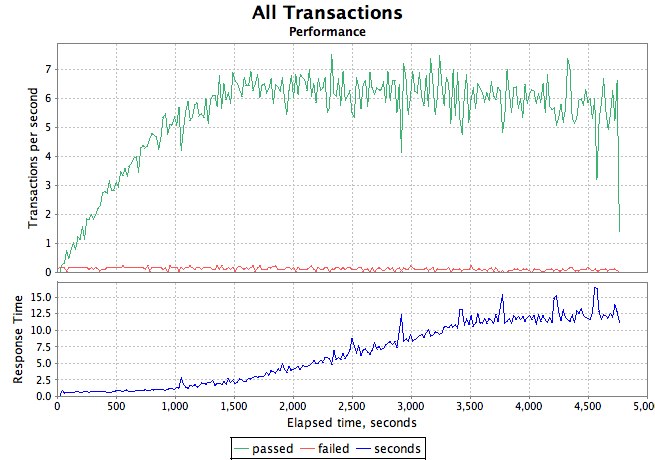

Grinder Analyzer is a tool that parses grinder log data and generates client-side performance graphs. These graphs include response time, transactions per second, and network bandwidth used. Like The Grinder itself, Grinder Analyzer uses Jython, and the excellent JFreechart graphing library.
